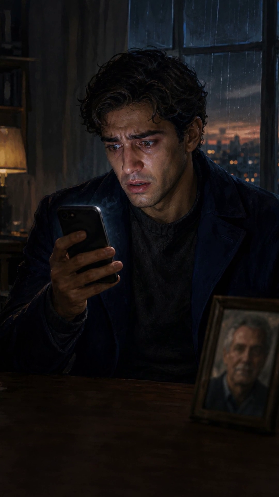
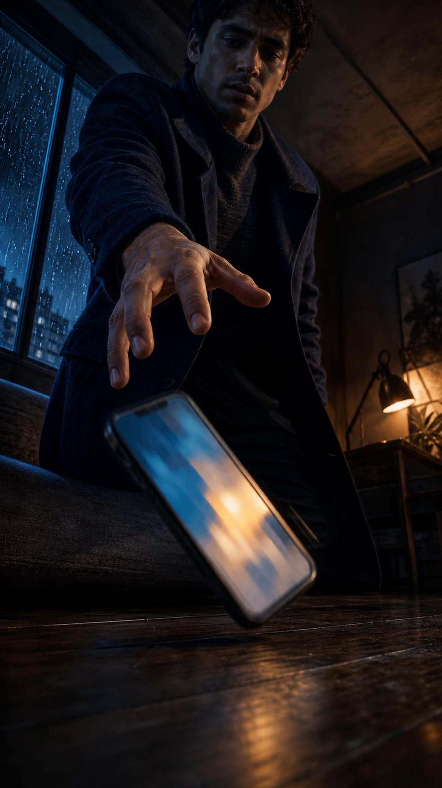
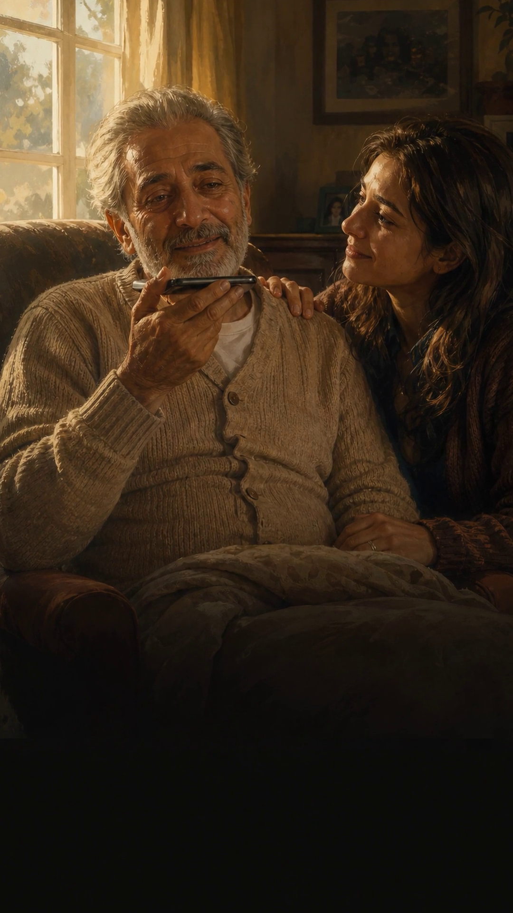
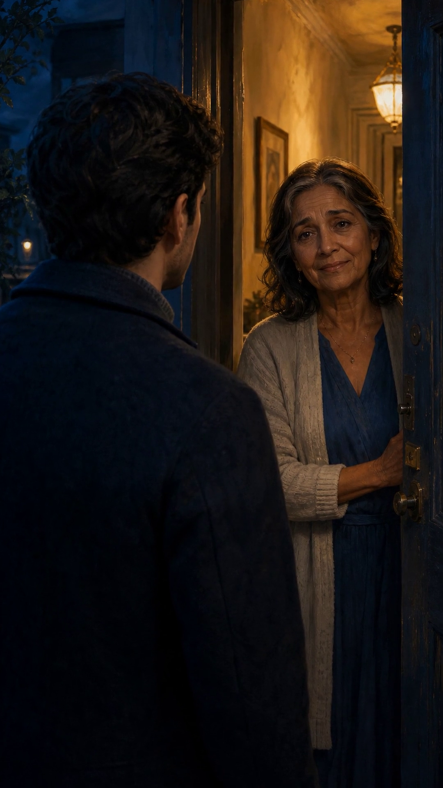
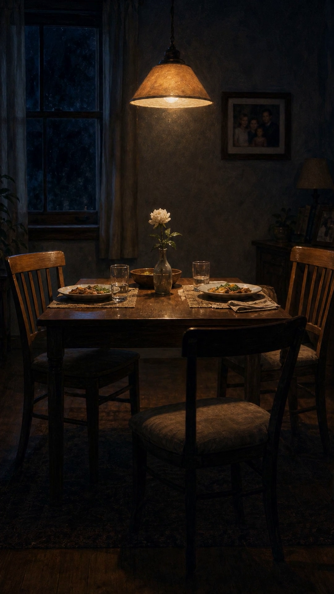
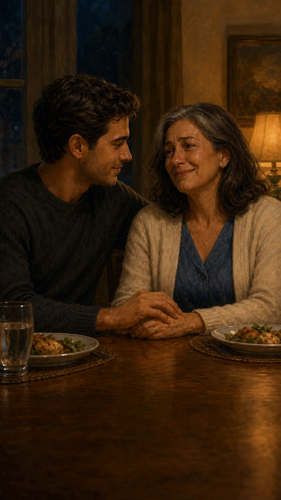

Every shot here was moved by motion/motion.py on CPU — no GPU, no paid model, no new artwork. The stills are the same six illustrations; only the camera and the light move.
| Animate all six illustrations | 3 min |
| Assemble the 53 s film | 2 min 48 s |
| Full episode, start to finish | ~6 min |
| GPU required | none |
| Money spent | $0 |
| Output | 1080×1920 · 30 fps · 53.00 s |
Compare with the original still-based cut: The Last Call (still + zoom) →
The honest limit: this moves the camera and the light. Nothing inside the frame changes shape — no mouth moves, no head turns, no new angle. For that you need an image-to-video model, which the target i3 laptop cannot run locally. docs/ANIMATION.md covers the free Colab route (LTX-Video, 6–8 min per clip) and what hosted models cost.
These were recovered from the finished film, since post1/images/ was never committed. motion/extract_stills.py finds a caption-free frame for each illustration and pulls it — captions cover about two thirds of the runtime, so every illustration has a clean window.






Drop <name>.mp4 into post1/clips/ from any image-to-video model and run python post1/render_video.py — it trims, retimes or ping-pongs each clip onto the shot plan, burns in the same captions, and falls back to the still for any shot you have not generated. A paid close-up can sit next to free CPU motion.